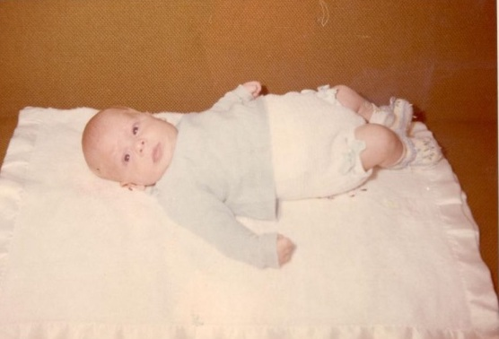
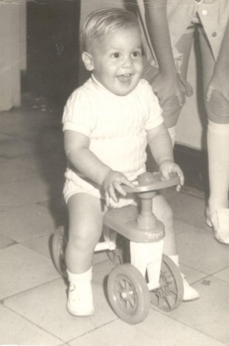
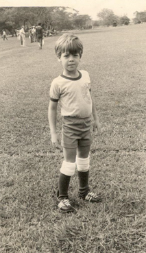
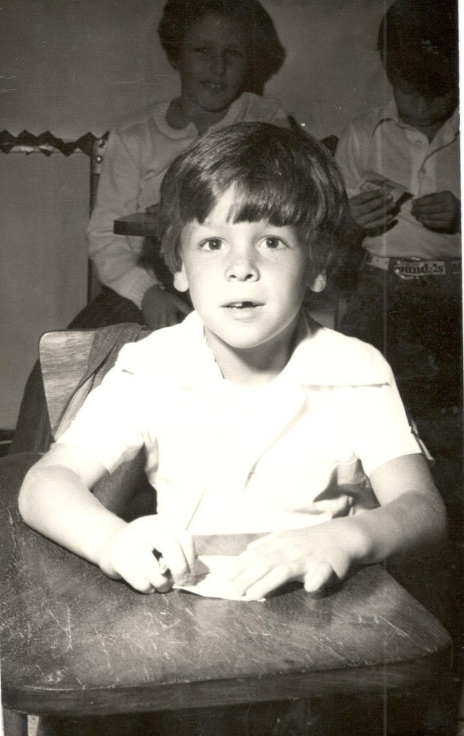
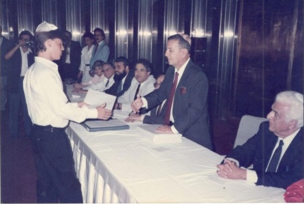
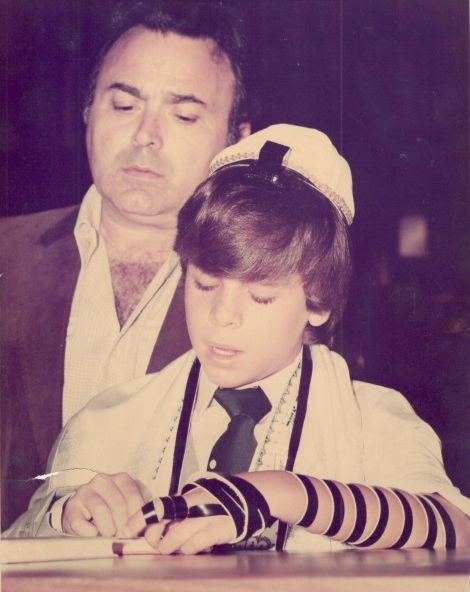
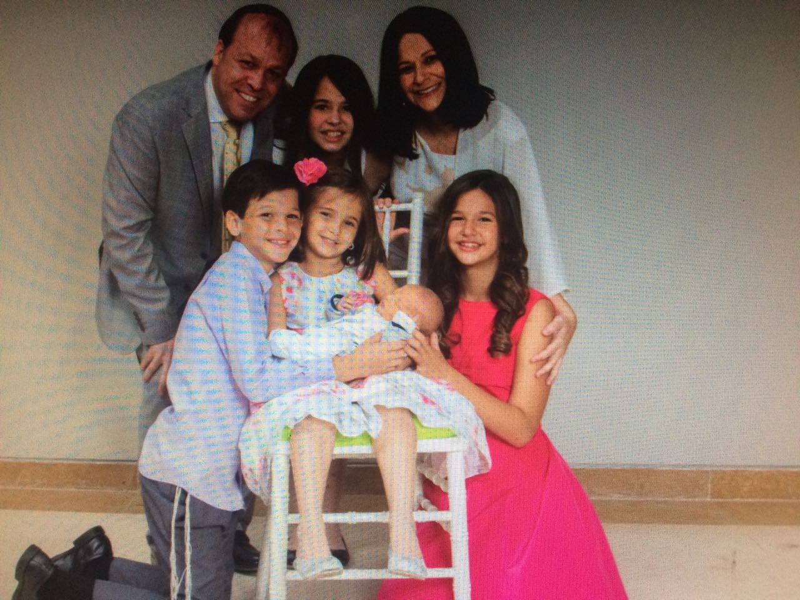

Mi papá Jacobo Levy Avram
Mi papá nació el 10 de septiembre de 1970 en la clínica Centro Medico de Caracas, ubicada en san Bernardino. Sus padres son Sarina Avram y Hernán (Nico) Levy. Es el segundo de 3 hermanos, él mayor mi tío Niso Levy que nació el 22 de mayo de 1969, y el menor mi tío Jimmy Levy que nació el 18 de julio de 1977.
Vivienda
Mi papá tuvo una infancia muy feliz, vivió en un apartamento de 110mt cuadrados, ubicado en San Bernardino, recuerda que el apartamento constaba de 2 habitaciones más la de servicio, por lo que siempre durmió con sus hermanos en el mismo cuarto, hasta que muchos anos después mi abuela remodela la casa, cuando él tenía 7 años, convirtiendo el cuarto de servicio en un cuarto para mi tío Niso y así solo dormía con mi tío Jimmy ( nunca dormido solo, pobrecito ) cerca de donde Vivian había un conjunto residencial que se llamaba Parque Residencial Anauco, que cuando uno entraba al conjunto estaba formado, al lado izquierdo por 5 edificios muy altos y por el lado derecho un conjunto de quintas, y en el medio del conjunto se levantaba un pequeño edificio que constaba de un supermercado, un banco y unos locales comerciales. También había un gran parque donde solía ir a jugar casi todas las tardes junto con todos los niños de la urbanización. Él me cuenta que ese conjunto estaba conformado por con casi 60% de puros judíos, me dijo que era muy agradable y podía ir caminando y siempre había un raspadera al cual lo llamaban el chileno. El raspado favorito de mi papá era el de colita (se notaba que en esa época no era kosher). También recuerda que de vez en cuando mi abuela lo llevaba a un lugar llamado Crema Paraíso donde siempre compraba un helado de chocolate con capa de chocolate.Le encantaba ver como lo sumergían en una piscina de chocolate, aunque odiaba tener que esperar hasta que se secara para poder empezar a comérselo. Tomaba una limonada que se recuerda de lo fría que era porque si lo tomabas rápido te daba un dolor horrible de cabeza.
En esa época en San Bernardino había un señor que tenía una carroza jalada por un caballo y pasaba por todas las casas de la zona y él se montaba a dar vueltas. Mi abuela cuenta que una vez, el carrito paso más temprano de lo normal y no se pudieron montar, y mi tío Niso empezó a llorar tanto porque quería montarse, que mi abuela tuvo que llamar a mi abuelo al negocio para que lo viniera a buscar para encontrar el carrito y así mi tío se pudiera montar. Otra cosa que mi papá recuerda cuando empezaron a cerrar la Cota mil los domingos para que las familias vayan a jugar y montar bicicleta, él recuerda que una vez vino su tío Sorel ( el hermano de mi abuela Sarina) y los llevó a todos a montar bicicleta, estaban ubicados a la altura del teleférico y mi papá pensando que todo era muy seguro empezó a montar bicicleta a distancias largar, en una de esas estaba yendo hacia San Bernardino y recuerda que llegaron 2 muchachos, uno lo cargó y lo tiró de y el otro se llevó la bicicleta, él se recuerda que la bicicleta era marca Choper, verde de 3 cambios que estaban ubicados entre el asiento y el volante y nunca más la volvió a ver. Hablando de la cota mil mi papa decía que su papá, abuelo no salía mucho con ellos por eso recuerda un día especial que llevó a mi papá y a mi tío Niso a jugar fútbol a un parque que hasta hoy en día existe el cual es El Mirador que está ubicado entre la Florida y la Castellana.
Deportes
Mi papá siempre practicó deportes cuando era jóven; jugaba fútbol y llegó jugar en unequiposemi-profesional que se llamaba Central Madeirense y se recuerda que después de cada juegole daban 5bs, un sándwich y una Coca Cola. Jugaba ping pong donde llegó al 5to lugar en el Distrito Capital. También hizo gimnasia acrobática. Recuerda cuando vino el primer entrenador de fútbol a Hebraica y que este se llamaba Roberto Koenig y mi papá y mi tío Niso fueron los primeros que empezaron a entrenar, en el año 75 o 76 cuando mi papá tenía como 5 o 6 años, cuenta que los entrenamientos terminaban de noche y que se paraba en el Salón Jerusalém a pedir cola y que siempre alguien se la daba.
Mi papá estudió en el colegio Moral y Luces Herzl Bialik de San Bernardino en la sede que hoy en día es Maor ha Toráh y cuenta que en esa época le daban 1bs diario y que 3 Torontos costaban un medio (hoy creo que cuestan como 100 mil cada uno).
En tercer año de bachillerato, pasa al Liceo Moral y Luces Herzl Bialik que se encontraba en el club Hebraica en el año 1985, cuando fue inaugurado. Se gradúa en el año 1987 con 16 años de edad. Siempre tuvo facilidades con las materias como matemática, física y química, pero le costaba mucho el castellano y el inglés. De hecho casi no se gradúa por esta materia, ya que lo pasó con 10 en la raya (mi papá y su suerte). 
En el año de 1987 entra en la Universidad Simón Bolívar a estudiar Ingeniería Electrónica. Recuerda con mucho cariño que su papá ( mi abuelo Nico Z”L) le prestó el único carro que había en la casa para que pudiera llegar a la universidad y mi abuelo se iba en carrito por puesto al trabajo. Después un trimestre la universidad entra en paro, así que mi papá opta por cambiarse a la Universidad Metropolitana donde estudia Ingeniería Eléctrica. Al segundo año de estar estudiando se entera por su mejor amiga Alex Guenoun que estudiaba Ingeniería Mecánica en la misma universidad, que PDVSA estaba dando becas para los mejores alumnos de todas las universidades. Mi papá aplicó y (obviamente gracias a su suerte) lo aceptaron, así que lo becaron, e hizo una pasantía en la planta de Pequiven de Maracaibo. En el último semestre de la carreara, la cual siempre tuvo miedo de no poder terminar, empezó a trabajar como comerciante, empezó a ganar lo que para él era mucha plata y cometió el peor error de su vida, no presentó la Tesis y no se graduó (siendo el segundo mejor de su promoción).
Trabajo
Mi papá empezó a trabajar en una distribuidora de productos para el calzado vendiendo cueros y suelas, después se asoció con mi tío Niso y mi tío Fredy el esposo de mi tía Nina en la compra de unos locales que se encontraban en el Mercado Cementerio. Era un trabajo muy duro porque había que madrugar hasta las 2 de la mañana para recibir a la gente que venía del interior a comprar, y mi tío Niso que se encargaba de las compras tenia que viajar todas las semanas a Los Ángeles, Nueva York o Brasil, donde se encontraba la mercancía. En los primeros años le fue tan bien que mi papá se pudo comprar un Toyota Célica, el cual tuvo que después vender cuando yo nací ya que no entraba la silla del bebé (era un carro deportivo de 2 puestos). Cuando se cansan del trabajo en el Cementerio, venden los locales e invierten en el negocio de la cervecería. El local se llamaba Beer Station, el cual consistía en que pagabas la entrada te daban un vaso y podías tomar toda la cerveza que querías de varios grifos que habían al rededor del local. Llegaron a ser los compradores número una de cerveza para Polar. después de eso junto con mi otro tío Jimmy montan una compañía de fumigación y distribución de productos de limpieza, y se vuelven los primeros distribuidores de papel para la marca Familia que es una marca colombiana, hasta que por situación país la compañía se va de Venezuela y tienen que empezar de cero y hacen lo mismo con la marca de Kimberly Clark hasta el punto que no pueden despacharles las cantidades requeridas por ellos, debido a esto se dan cuenta que siempre dependen de un tercero para seguir creciendo en el comercio y deciden hacer su propia fábrica de papel la cual se llamó Roll Green de Venezuela. También por problemas comerciales y de divisas en el país y problemas con los socios que tenían, deciden cerrar la fábrica. 3 años después mi papá decide volver hacer una nueva fábrica de papel que hoy en día es en lo que trabaja y su marca es NOAM.
Religión 
En el hogar donde creció no era primordial la religión. Cuándo su abuela Doravivía (mamá de su mamá), iban a su casa los viernes a cenar. Pero era más que todo una reunión familiar más que un acto religioso. Luego no tiene mucho recuerdo de que practicaran gran cosa en su casa. Iba ala sinagoga Bet-El en alguna festividades. Ahí fue donde realizó su Bar- Mitzva (aunque no recuerda, siquiera cual Parasha leyó). Al graduarse del liceo, recuerda asistir con más frecuencia a la sinagoga, porque acompañaba a su tío Sorel (hermano de su mamá) a la Lubavich de San Bernardino, los viernes por la noche.
No será hasta muchos años más tarde cuando se case con mi mamá que la Torah se volverá el centro de su vida.
Amor
Mi papá se casa en el año 2002 con mi mamá, siendo ella la hermana de uno de sus mejores amigos mi tío Rubén. Ellos siempre fueron amigos, hasta que un día empezaron a salir y después de un tiempo se empataron y al año y medio de noviazgo se casan. 9 meses y 5 días después, el 8 de julio del año 2003, nace su primera hija Dana (o sea yo) la cual, dicen ellos que es una de las cosas más maravillosas que les ha pasado. Un año y seis meses después nace su segunda hija o sea mi hermana Vivi el 7 de enero del 2005. El 28 de octubre del 2006 nace su primer varón Arie Tzvi Levy mi hermano y el 13 de abril del 2010 nace Analy la cuarta de la familia, pensando que allí se quedaría todo, 6 años después cuando mi padre tiene 46 años aparece el quinto en la cuenta; Eli David el 27 de julio del 2016, mis padres no saben si es su quinto hijo o su primer nieto, jajajaja.

Reflexiones de mi padre
Puedo decir que gracias a Hashem he tenido una vida muy feliz siempre lleno de alegrías y cosas buenas acompañado siempre de seres queridos; mis abuelos, mis tíos y en especial mis padres. El año pasado fue muy duro ya que perdí a mi querido padre, algo fuerte de asimilar aunque sea una ley de la vida, creo que las personas no están preparadas para perder seres cercanos y sólo el tiempo es capaz de curar ese tipo de herida que nunca se cierra. Me casé con una gran mujer, excelente madre, compañera y por supuesto maestra y Hashem me ha dado el regalo de tener 5 bellos hijos por ahora que espero me acompañen junto con mi mujer a recorrer este bello viaje que es la vida y estemos siempre juntos hasta que nos llamen de arriba.